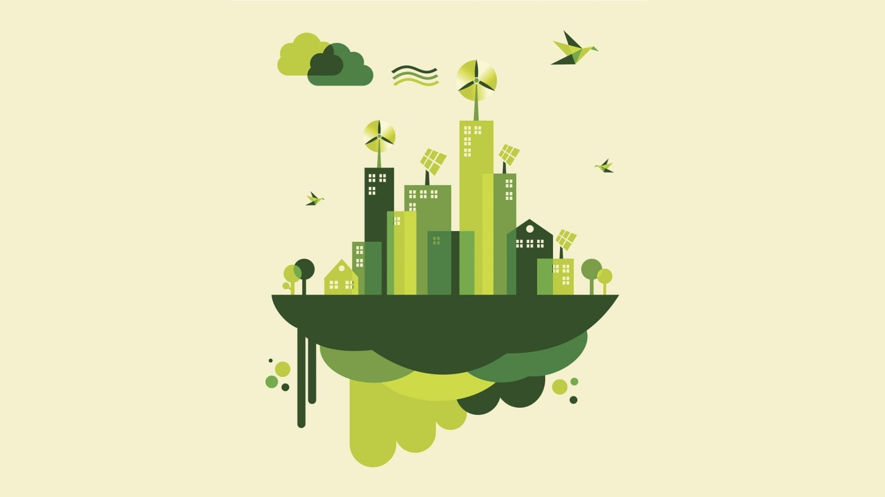

Capitulo 4. La Agenda 21.
Introducción a la Agenda 21.

Los problemas ambientales no sólo problemas particulares que afecten un sitio o un
pequeño grupo de individuos, de una región o de un país; la degradación ambiental
no respeta fronteras ni límites políticos. Hay graves amenazas que se ciernen sobre
el mundo, hay fenómenos como la lluvia acida, el calentamiento de la atmósfera
debido a los efectos de los gases de efecto invernadero, la destrucción de los
bosques tropicales, la pérdida de especies, la destrucción de la capa de ozono, la
desertificación, la destrucción del medio marino, el cambio climático, la
sobrepoblación humana y, sobre todo, la desigualdad económica y social entre los
individuos de la especie humana, la pobreza y el agotamiento de los recursos
naturales.
Antecedentes de la Agenda 21.
La Agenda 21 se empezó a gestar con el movimiento iniciando en el año 1968,
cuando un grupo de 35 científicos de treinta países diferentes se reunieron en
Roma, preocupados por los cambios que aquel estilo de desarrollo estaba
causando en el planeta
Capítulo 5. Declaración del Milenio
La Declaración del Milenio es una confirmación del compromiso que han asumido las naciones
firmantes para continuar considerando los postulados de la Agenda 21. La Declaración del Milenio
fue aprobada en la Cumbre del Milenio celebrada entre el 6 y el 8 de septiembre de 2000. En ella
participaron 191 países y se discutieron los retos que el mundo enfrenta, y los líderes mundiales que
en esta reunión participaron lograron establecer objetivos concretos, entre los que destacan:
Objetivos:
- Erradicar la pobreza extrema y el hambre.
- Lograr la enseñanza primaria universal.
- Promover la igualdad entre géneros y la autonomía de la mujer.
- Reducir la mortalidad infantil.
- Mejorar la salud materna.
- Combatir el VIH/SIDA, el paludismo y otras enfermedades.
- Garantizar la sostenibilidad del medio ambiente.
- Fomentar una asociación mundial para el desarrollo.
Los objetivos acordados en esta cumbre ahora se conocen como los Objetivos de Desarrollo del
Milenio (los ODM)
A continuación, se presentan los tres objetivos más sobresalientes del primer informe anual del
secretario general de Naciones Unidas sobre la ejecución de la Declaración del Milenio:
Objetivo 1 Erradicar la pobreza extrema y el hambre.
Meta: Reducir a la mitad, para el año 2015, el porcentaje de habitantes del planeta cuyos ingresos
sean inferiores a un dólar al día.
Objetivo 2 Lograr la enseñanza primaria universal.
Meta Alcanzar para el año 2015 el acceso a la educación primaria completa.
Objetivo 3 Promover la igualdad entre los géneros y la autonomía de la mujer.
Meta Eliminar las desigualdades entre los géneros en la enseñanza primaria y secundaria
preferentemente para el año 2005, y en todos los niveles de la enseñanza para el 2015.
Capítulo 6. Desarrollo Sustentable
En la interacción sociedad-naturaleza, los procesos productivos ocupan un lugar central. El
crecimiento demográfico y la necesidad de generar más alimentos han inducido innovaciones
tecnológicas que han sustituido a las especies silvestres; la agricultura es un ejemplo de ello: se
deforestan grandes áreas para destinarlas a la agricultura, para la producción de alimentos para los
seres humanos y los animales; el hombre demanda alto rendimiento en los campos de cultivo,
establece prácticas de irrigación artificial, utiliza fertilizantes y concentra gran cantidad de
energéticos que demanda la agricultura; utiliza semillas genéticamente modificadas y todo esto
provoca una disminución en la productividad total del ecosistema.
Es fácil observar que el desarrollo sustentable no se refiere a un problema limitado de adecuaciones
ecológicas de un proceso social, sino a una estrategia o modelo múltiple para la sociedad, y que debe
tener una viabilidad económica y factibilidad ecológica. En un sentido muy amplio, está referido a la
redefinición de las relaciones sociedad humana-naturaleza y, por tanto, un cambio sustancial del
propio proceso de civilización. Pero en otro sentido muy concreto se topa con restricciones
tecnológicas, culturales, económicas y de muy diversa índole (Provencio, 1992) y de las cuales
dependen las posibilidades de aplicación. De ahí la importancia de que el desarrollo sustentable se
aborde no sólo desde la economía o la ecología; se debe abordar ampliamente, a través de diversos
modelos de desarrollo, de los planteamientos ambientalistas, de las corrientes intelectuales y de los
movimientos sociales.
En resumen, desarrollo sostenible y desarrollo sustentable quieren decir lo mismo, y la definición
casi universalmente aceptada es: El desarrollo sostenible: es el desarrollo que satisface las
necesidades del presente, sin comprometer la capacidad para que las futuras generaciones puedan
satisfacer sus propias necesidades.
Dimensiones del Desarrollo Sustentable
DIMENSIÓN ECONÓMICA: Los países tienen diferente grado de desarrollo y el trabajo que se debe
realizar en cada uno de ellos variará según el país de que se trate y eso tiene que ver con el consumo
de energía, los recursos naturales y los estilos de vida. En esta dimensión se debe analizar el consumo
de energía per cápita del producto nacional bruto y también algunos otros aspectos que pudiesen
ser fácilmente identificables y servir como indicadores.
DIMENSIÓN HUMANA: A partir de 1991, las Naciones Unidas, en el informe relativo al desarrollo
humano, resaltan la necesidad de reasignar recursos económicos para atender las necesidades
básicas de los humanos y centran la atención en los hombres, las mujeres y los niños y que a su
alrededor se forje el desarrollo. Esta dimensión tiende hacia la satisfacción de las necesidades
básicas de salud, educación, ambiente limpio y participación igualitaria de las mujeres y los grupos
minoritarios
DIMENSIÓN AMBIENTAL: El cuidado, la protección y la restauración del ambiente, representa un
requisito indispensable para contrarrestar las tendencias que amenazan la vida del planeta; esta
dimensión hará que el desarrollo sustentable se oriente a que:
- Todos los países mejoren sus políticas de protección del ambiente.
- Los países industrializados se preocupen más por evitar la contaminación de los recursos y por el
uso eficiente de éstos.
- Los países en desarrollo se preocupen por la conservación básica de sus recursos renovables como
el suelo, el agua y los bosques, que son la base de sus economías.
DIMENSIÓN TECNOLÓGICA: Desde esta perspectiva, es obvio que todos los países deberán adoptar
estrategias tecnológicas no destructivas, que tiendan hacia el logro del desarrollo sustentable. Esta
dimensión llevará a que:
- Los países industrializados busquen cambiar sus tecnologías por otras más eficientes.
- Los países en vías de rápida industrialización aprovechen la oportunidad para desarrollarse con
tecnologías más eficientes y limpias.
- Las economías de países en desarrollo que aún se basan principalmente en la agricultura,
desarrollen tecnologías apropiadas y de pequeña escala tanto para incrementar la productividad
agrícola como para la fabricación
Indicadores de Sustentabilidad

¿Qué significa sustentabilidad? Es el desarrollo basado en criterios no sólo económicos, sino también
sociales y ambientales. Garantiza que la calidad de vida y la productividad se sustenten en medidas
apropiadas de preservación del equilibrio ecológico, protección del ambiente y aprovechamiento de
los recursos naturales, de manera que no se comprometa la satisfacción de las necesidades de las
generaciones futuras.
Pero ¿realmente qué es un indicador? Un indicador es un hecho, una expresión, una situación o un
signo que hace claramente perceptible una tendencia o fenómeno que no es fácilmente detectable
inmediatamente, y que permite comprender, sin ambigüedades, el estado de la sustentabilidad de
un sistema o los puntos críticos que ponen en peligro dicha sustentabilidad.
Tanto las estadísticas ambientales básicas como los indicadores ambientales se presentan
normalmente en esquemas de tipo abierto, como el esquema para la elaboración de estadísticas del
medio ambiente. Las estadísticas ambientales son relativamente nuevas, dependen de la evolución
de los conocimientos científicos sobre las relaciones entre los humanos y su medio ambiente y
tienen como objetivo describir y medir los efectos de las actividades humanas perjudiciales para el
medio ambiente.
A fin de tener una mejor idea de la interacción entre las actividades antropogénicas y la naturaleza
y sus efectos sobre la salud y el bienestar humano, se utilizan las estadísticas del medio ambiente
que incluyan datos ambientales y socioeconómicos. La función de las estadísticas ambientales es
proporcionar un panorama sintetizado de los datos que facilite la formulación de políticas
ambientales y su integración a las políticas económicas y sociales.
Parámetros del Desempeño Ambiental
-
Presión: Actividades antropogénicas que impactan el medio.
-
Estado: Condición en que se encuentra el medio, en cuanto a su grado de preservación o deterioro
ambiental.
-
Respuesta: Las medidas tomadas por la sociedad en su conjunto para hacer frente a los problemas
ambientales.
Los indicadores ambientales son una herramienta que ayuda a comprender mediante análisis una
situación ambiental determinada.
Los bienes ambientales comunes son: el aire, el agua y el suelo. Estos son de todos y nos
proporcionan servicios ambientales a todos. Pero ¿qué son los bienes y servicios ambientales?, ¿Qué
son los ecosistemas? Los bienes ambientales son beneficios tangibles de la naturaleza (madera,
agua, suelo, plantas medicinales, etc.), de los que nos beneficiamos directamente. Los servicios
ambientales son beneficios intangibles cuya utilización es indirecta (captura de carbono, regulación
del clima, belleza escénica, control de la erosión y muchos otros).
Los ecosistemas naturales son el resultado de millones de años de procesos de evolución biológica
y ecológica que han conducido a redes de vida complejas. Los ecosistemas naturales del planeta se
clasifican de diversas mane-ras: una de ellas es la que distingue a los bosques tropicales de los
bosques templados, de los pastizales, de las zonas áridas y semiáridas, de los humedales y de los
ecosistemas acuáticos y marinos.
Las funciones ecológicas se clasifican en:
Funciones de regulación: : Son las que se relacionan con la capacidad natural de los ecosistemas
para ajustar y mantener los procesos biológicos esenciales en el mantenimiento de la vida, por
ejemplo, todos los ciclos naturales de la materia, incluidos los del agua, el carbono, el oxígeno y el
nitrógeno.
Funciones de hábitat: Los ecosistemas proveen refugio para plantas, animales y microrganismos,
así como espacio para la reproducción u otras fases de su ciclo bio-lógico. Estas funciones son
fundamentales para el mantenimiento de la diversidad biológica y genética del sitio.
Funciones de producción: Se refieren principalmente a la biomasa que producen los organismos
vi-vos, e incluyen procesos de fijación de nutrientes, conversión de la energía solar a química y a la
transformación de la energía en materia.
Funciones de información: Son las funciones relacionadas con los mecanismos de la herencia; las
que resultan de la evolución natural de las especies y constituyen el reservorio genético de la vida.
Los bosques y el agua son los principales protagonistas del desarrollo de la vida en los ecosistemas:
los primeros por ser productores y el agua por ser el líquido conductor, regulador y portador de la
vida. Los bosques y las selvas cubren, en conjunto, 30% de la superficie terrestre del país mexicano.
Introducción a las tendencias del desarrollo sustentable
El desarrollo sustentable será aquel que, aparejado al desarrollo económico, a la satisfacción de las demandas
sociales y a la utilización de los recursos naturales, haga frente al desafío de construir un futuro más racional y
equitativo para las generaciones por venir.
El desarrollo sustentable busca hacer compatible al satisfacción delas necdesiades y aspiraciones sociales con el
mantenimiento ed los equilibrios biofísicos y sociales propio desarrollo actual y futuro
Participación social
Es la intervención de los ciudadanos en la toma de decisiones respecto al manejo de los recursos y las acciones que
tienen un impacto en el desarrollo de sus comunidades. En este sentido, la Participación Social se concibe como un legítimo
derecho de los ciudadanos más que como una concesión de las instituciones.
Recursos Económicos
En economía, las cosas que se utilizan para producir bienes materiales se
denominan recursos eco- nómicos o factores de producción. Generalmente, se
clasifican en tres apartados:
-
Recursos naturales: Son los producidos por procesos naturales de la tierra.
-
Bienes de capital (o intermedios): Son artículos manufacturados a partir de
recursos naturales, que se usan para producir y distribuir bienes
económicos y servicios adquiridos por los consumidores.
-
Mano de obra o fuerza laboral: Corresponde a las facultades físicas y
mentales de las personas. Los trabajadores venden su tiempo y sus
habilidades por un salario.
Indicadores Económicos
Los indicadores económicos son datos estadísticos que tienen como
finalidad tener los elementos que permitan hacer un análisis económico
con información específica o de un sector, ya sea de un periodo pasado o
presente. Básicamente, con ellos puede conocer cómo se
encuentra la economía.
Instrumentos Económicos
Los instrumentos económicos son todos aquellos que inciden en los costos
y beneficios imputables a los cursos de acción alternativos que enfrentan
los agentes; afectan por ejemplo la rentabilidad de los procesos o
tecnologías alternativos, o el precio relativo de un producto o actividad, y
en consecuencia las decisiones de productores y consumidores.
Análisis de Costos-Beneficios
El análisis de costos y beneficios compara los costos calculados de los
proyectos con los beneficios que se obtendrán. A menudo sirve como
medio para decidir, en forma racional, si seguir adelante con lo planeado o
suspender un proyecto.